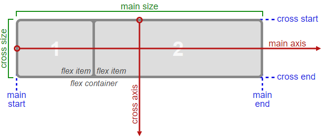

Sometimes the flex items within a flex container do not fill all the space in the container. It is common to want to
tell CSS how to align and space out the flex items a certain way. Fortunately, the justify-content property has several
options to do this. But first, there is some important terminology to understand before reviewing those options.
Here is a useful image showing a row to illustrate the concepts below.
Recall that setting a flex container as a row places the flex items side-by-side from left-to-right. A flex container
set as a column places the flex items in a vertical stack from top-to-bottom. For each, the direction the flex items are
arranged is called the main axis. For a row, this is a horizontal line that cuts through each item. And for a column,
the main axis is a vertical line through the items.
There are several options for how to space the flex items along the line that is the main axis. One of the most commonly
used is justify-content: center;, which aligns all the flex items to the center inside the flex container. Other options
include:
Flex-start:
aligns items to the start of the flex container. For a row, this pushes the items to the left of the
container. For a column, this pushes the items to the top of the container. This is the default alignment if no
justify-content is specified.
Flex-end:
aligns items to the end of the flex container. For a row, this pushes the items to the right of the container.
For a column, this pushes the items to the bottom of the container.
Space-between:
aligns items to the center of the main axis, with extra space placed between the items. The first and
last items are pushed to the very edge of the flex container. For example, in a row the first item is against the left
side of the container, the last item is against the right side of the container, then the remaining space is distributed
evenly among the other items.
Space-around:
similar to space-between but the first and last items are not locked to the edges of the container, the
space is distributed around all the items with a half space on either end of the flex container.